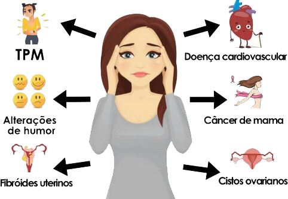
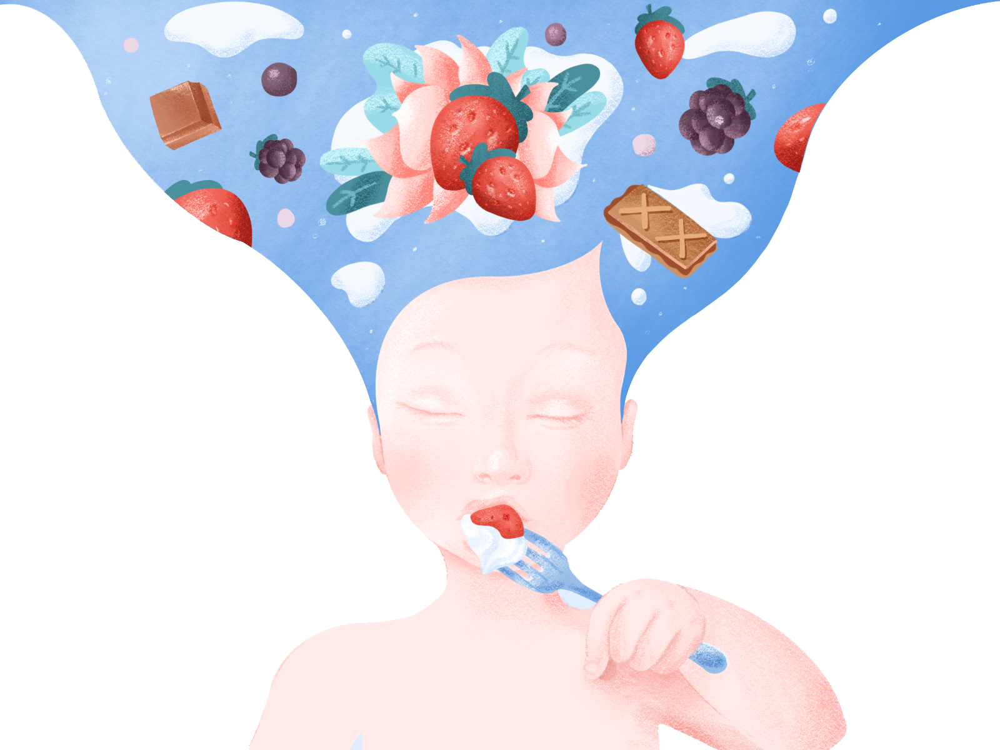
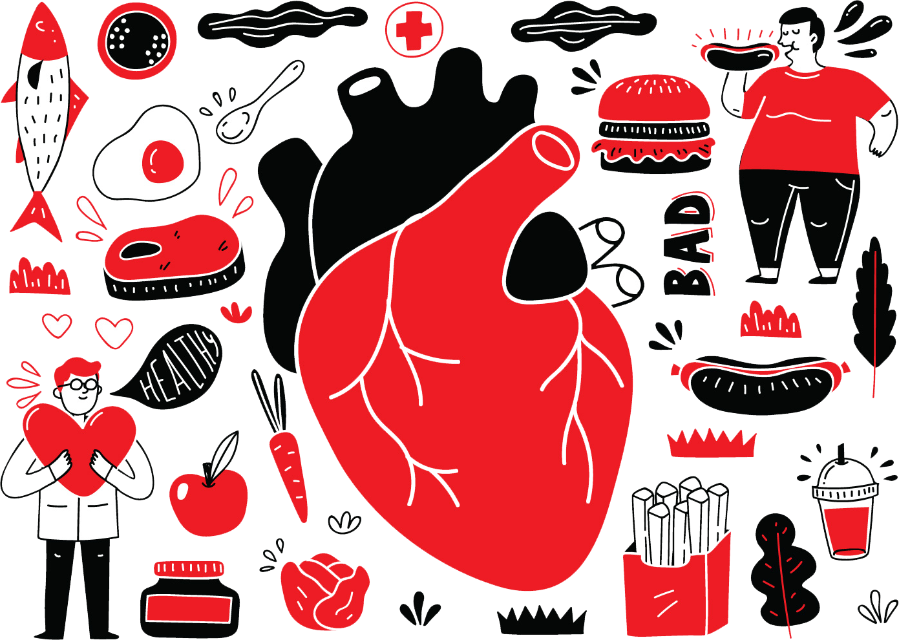

Os Nutricionistas da Açucena Nutrição vão além dos sintomas para tratar a causa raiz de sua doença e proporcionar uma cura a longo prazo com apenas alimentos
ALGUNS DE NOSSOS SERVIÇOS
Como podemos ajudá-lo a se sentir melhor?
Problemas digestivos
Os problemas digestivos são uma queixa frequente nos consultórios médicos. Quando a nossa digestão não funciona direito, é porque o nosso organismo está em desequilíbrio e isso também pode afetar a nossa mente.

Saúde Hormonal
Os hormônios, são responsáveis por controlar nosso humor, o sistema digestivo, energia, a libido, a fertilidade, o metabolismo e a saúde da nossa pele, sistema imunológico e inflamação. Mas, manter os hormônios em equilíbrio requer um grande desafio: a alimentação saudável.

Bem-estar mental
Possuir uma boa alimentação pode, inclusive, ajudar na recuperação de transtornos mentais, como ansiedade e depressão. Segundo a endocrinologista, Cintia Cercato, “Pesquisas apontam que indivíduos que possuem um padrão de dieta saudável são capazes de reduzir 16% o risco de transtorno depressivo”.

Cuidados Pediátricos
A má alimentação nessa fase pode causar anemia, emagrecimento ou obesidade, cansaço a longo prazo e até mesmo distúrbios psicológicos e motores — daí a importância de um acompanhamento Nutricional.
Autoimune e Inflamação
A maioria dos pacientes com doenças autoimunes não sabe da importância da alimentação para a melhora dos sintomas. Tudo o que comemos interfere diretamente no sistema imunológico. Por isso, pessoas com alteração nesse mecanismo de defesa devem ficar mais atentos na hora das escolhas.

Saúde do Coração
A importância da alimentação adequada na redução do risco cardiovascular e no controle dos fatores de risco já está demonstrada por uma série de evidências científicas. Estudos demonstraram que as doenças cardiovasculares podem ser reduzidas em 30% com modificações no estilo de vida, e uma das melhores formas de evitar o problema é através da prevenção, que inclui uma alimentação saudável.